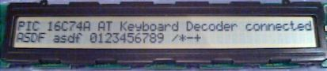
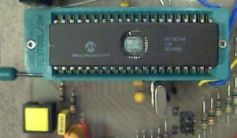
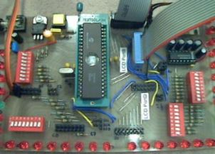
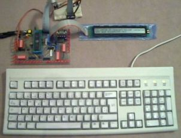
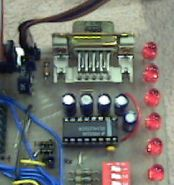

with LCD Display for Microchip PIC16F77
/ PIC16C74A
Concept
How it works
Specifications
Features
Limitations
Project Resources
Available PIC Assembler
Code
Schematic, Data Sheets, Pinout
User-specific Customization
This implementation contains the complete fetch and decoding
of AT keyboard scan patterns as well as RS232 transmission and
reception of ASCII characters to and from the remote RS232 client.
This microcontroller application also features an interface to
a dot matrix LCD display to visualize the the data received from
the RS232 client on the first line, and the characters typed on
the locally attached keyboard on the second line.
|  | ||
|  |  | |
|  |  | |
Any key stroke on the local keyboard will send the corresponding
scan patterns from the keyboard to the PIC microcontroller. Afterwards,
the microcontroller converts the keyboard scan patterns to ASCII
characters, shows them on the LCD display and transmits them to
the RS232 target device.
The keyboard scan code capture is done by an interrupt service
routine. The event, which triggers the interrupt is a falling
edge on the keyboard clock line (PORTB,0). Keyboard scan pattern
acquisition takes place at the keyboard data line (PORTA,4). After
11 clocks (i.e. 11 external interrupts on RB0/INT), the interrupt
service routine has completely captured an 8 bit element of the
entire scan pattern and sets a ready flag. The decoding of this
8 bit element is then carried out during normal operation mode,
activated by a valid ready flag whilst keeping the keyboard stalled
(keyboard clock line low).
The fact, that the scan pattern acquisition is carried out using an interrupt service routine and the decoding thereof is done during normal operation mode allows for performing other tasks concurrently: That's why I call the acquisition routine preemptive. It does not block the processor while acquiring data.
This program features also the capability of bi-directional
communication between controller and keyboard for configuration
purposes and to control the keyboard LEDs. RS232 data exchange
is carried out by using the internal USART of the PIC 16C74A.
RS232 data reception is done on an interrupt-based acquisition
scheme, provided by the USART.
For dedicated code adaptations, please refer to the section 'User-specific Customization' below.
If you don't know the theory of AT keyboards, have a look at my short introduction or at Craig Peacocks tutorial about Interfacing the PC's Keyboard.
| Processor: | PIC16C74 A |
| Clock Frequency: | 4.00 / 8.00 MHz crystal |
| Throughput: | 1 / 2 MIPS |
| RS232 Baud Rate: | 9600 / 19200 baud with BRGH = 1 |
| Keyboard Routine Features: | Capability of bi-directional communication between controller and keyboard |
| Acquisition Methodology: | Preemptive, interrupt-based keyboard scan pattern acquisition, decoding to ASCII characters during normal operation mode activated by ready flag |
| Code Size of entire Program: | 964 instruction words |
| Required Hardware: | AT keyboard, PS/2 connector, MAX232, HD44780 compatible dot matrix LCD (2x16, 2x20 or 2x40 characters) |
| Required Software: | RS232 terminal software (or Excel 97 RS232 Debug Interface) |
|
Important note from Jason Plumb: «Hey, First, lemme say that I like your site and thank you for providing excellent reference material for us home-hobbyist microcontroller geeks. I am currently working on a music/noise project that uses a PS/2 keyboard interfaced to a PIC16F84, and I used your page at http://www.electronic-engineering.ch/microchip/projects/keyboard/v1xx/keyboard_v1xx.html heavily as a reference when designing hardware and writing code. Anyway, I just thought that I would mention that I ran into a problem that I have since solved. The problem involved sending bytes *TO* the keyboard from the PIC (in order to light NumLock and ScrollLock). Your "Host To Keyboard Protocol" section indicates that the keyboard will take the data line low for a clock after the byte is sent to create an ACK bit. Apparently, the PS/2 keyboard that I have (generic $10 comp-USA brand) doesn't send an ACK bit, but rather sends a whole byte. If my code attempted to wait for the ACK bit, it hung indefinitely. I changed the wait to look for a byte (by calling my existing function) and everything worked perfectly. I stumbled on this idea by looking at other online references (most notably, some Linux kernel code at http://www.mscs.mu.edu/~georgec/Classes/207.1998/14Minix_book/S/src%20kernel%20keyboard.c.html#307). I have seen this ACK *byte* mentioned elsewhere too. I *think* the keyboard sends back 0xFA as an ACK byte, but I have not personally confirmed this. Perhaps your excellent documentation could just use a quick note of clarification so that other don't run into the same problem. Maybe something as simple as: "NOTE: Some keyboards send an ACK byte (value 0xFA) instead of an ACK bit.". Thanks again, |
Note from the author:
The comment above refers to bi-directional communication between PIC microcontroller and AT keyboard, i.e. to the source code of the AT Keyboard Interface V2.xx and higher versions. The bi-directional communication between host and keyboard is designed to support both Ack bits and Ack bytes.
A corresponding PIC assembler code example is shown below:
;*** switch keyboard LEDs on (default status) ***
KBDcmd 0xED ; keyboard LEDs' control command
KBDexp 0xFA ; expect keyboard acknowledge (FA)
movfw KBDleds ; load keyboard LEDs' status
KBDcmdw ; send keyboard LEDs' control data
KBDexp 0xFA ; expect keyboard acknowledge (FA)
However, some AT keyboards may behave different and may need code adaptations to get bi-directional communication working properly.
| Main File | Main Keyboard Decode Lookup Table | SHIFT Keyboard Decode Lookup Table | HEX Files |
|
Latest version: Slim version without ALT-DEC & CTRL-HEX feature: |
English 'codepage' (QWERTY) View: eng_main.html Download: eng_main.asm |
English 'codepage' (QWERTY) View: eng_shif.html Download: eng_shif.asm |
QWERTY 'codepage': QWERTZ 'codepage': |
|
Modified Swiss German 'codepage' (QWERTZ) View: ger_main.html Download: ger_main.asm |
Modified Swiss German 'codepage' (QWERTZ) View: ger_shif.html Download: ger_shif.asm |
||
|
The above programs need additional include files (modules) to get successfully assembled: m_bank.asm,
m_wait.asm, m_lcd_bf.asm Important: Due to bi-directional communication between controller and keyboard as well as between controller and LCD display, the above programs only work if both components are connected and are working properly! |
|||
| For those, who are not familiar with interfacing a PIC to the RS232 using a MAX232: RS232-Interface.pdf (9.7 kB) | |||
AT Keyboard Specification (PDF, 189 kB)
The schematic of the AT keyboard interface using the PIC 16C74A: Keyboard_V3xx.pdf.
You don't know how a dot matrix LCD is working? Have a look at my data sheets page.
Download ASCII Character Map: ASCII-Map.pdf
You can get the description of the various keyboard connectors
<here>.
For a high level view, please refer to the section 'How it works' above.
Basically the same customization as for AT
Keyboard Interface V1.xx applies to this implementation.
If you apply changes to the existing code, you may need to change the ORG directives in order to realign the assembler code properly.
Last updated: 30.12.2004